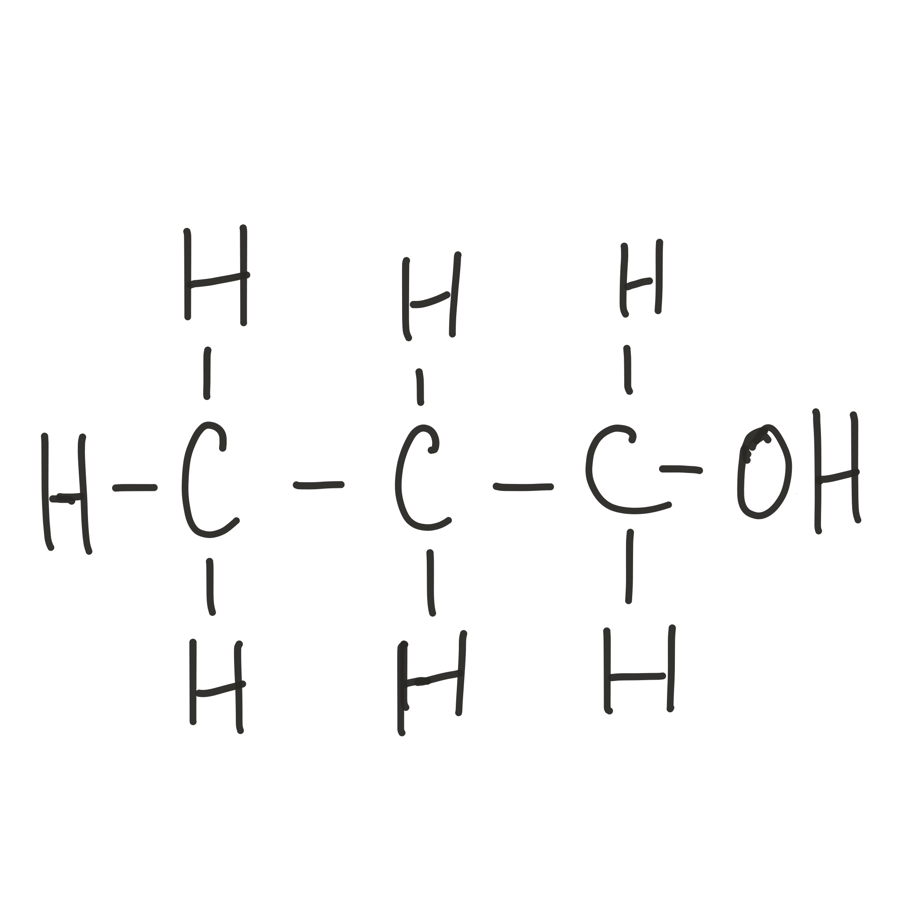

Ethanol is the compound that we commonly refer to as alcohol in everyday life.
Propanol the alcohol with a three carbon chain

Butanol is the alcohol with a four carbon chain
Naming Alcohols
Each alcohol is named for the longest carbon chain (carbon backbone) in the molecule
- methanol - one carbon
- ethanol - two carbons
- propanol - three carbons
- butanol - four carbons
- pentanol - five carbons
- hexanol - six carbons
An alcohol can contain more carbons than appear in the carbon backbone of the molecule
For example, 2-methyl-1-propanol
Explanation for the name
This is a propanol because it has a three carbon chain
The 1 before the Propanol shows that the OH group is on the first carbon of the backbone.
The 2-methyl shows that there is a methyl group attached to the second carbon.
You start your carbon count from the end nearest the most important functional group
For alcohols this is the OH group